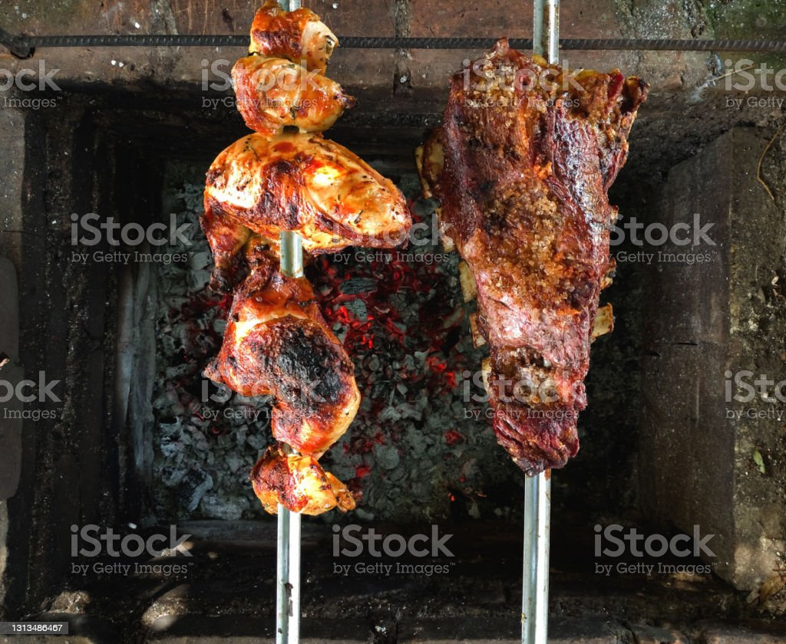
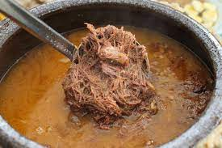
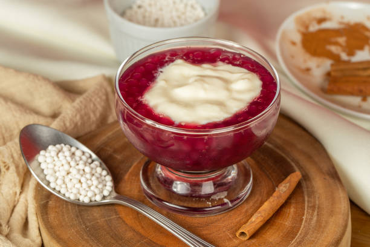
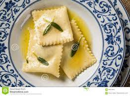
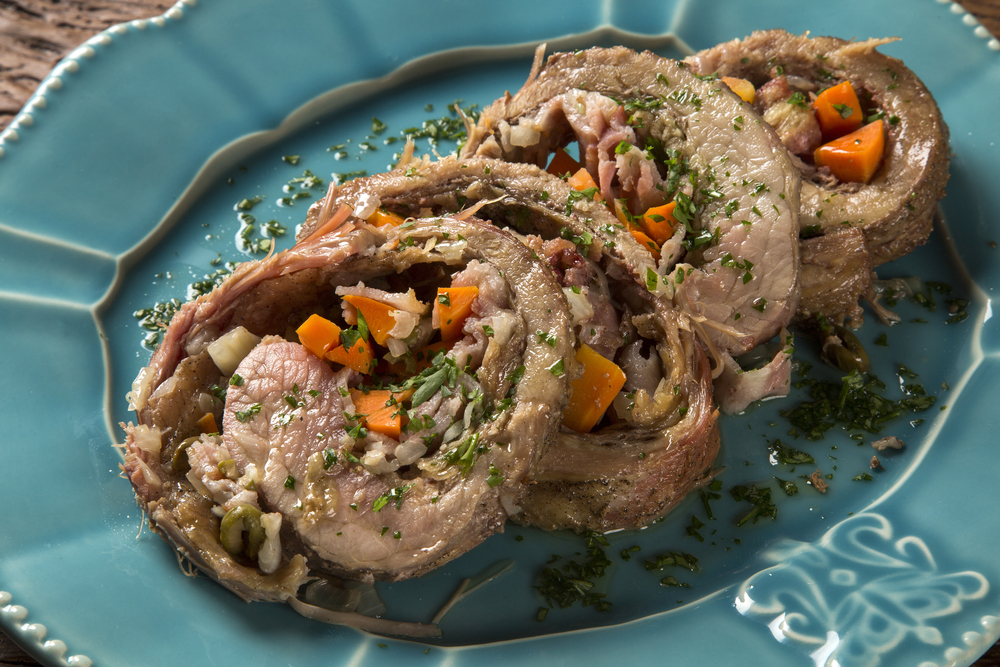

Churrasco: a região Sul é conhecida pelo seu churrasco tradicional, que consiste em carnes bovinas, suínas e de cordeiro assadas na brasa. O churrasco sulista é apreciado pela qualidade da carne e pelo cuidado no preparo.
Barreado: prato típico do litoral paranaense, é um cozido de carne bovina, temperada com bacon, cebola, alho e condimentos, e cozido lentamente em uma panela de barro. É servido com farinha de mandioca e banana.
Sagu com Creme: uma sobremesa clássica do Sul, é feita com sagu (bolinhas de tapioca) cozidas em suco de uva e servidas com creme de baunilha ou creme de leite condensado.
Tortéi: uma massa recheada com uma mistura de queijos, como ricota, parmesão e mussarela. É cozido e servido com molho de tomate ou manteiga derretida.
Matambre Recheado: prato de origem argentina e muito popular no Sul do Brasil, é uma carne fina e alongada, temperada e recheada com cenoura, ovos, pimentão e ervas. É enrolada, amarrada e assada no forno.
